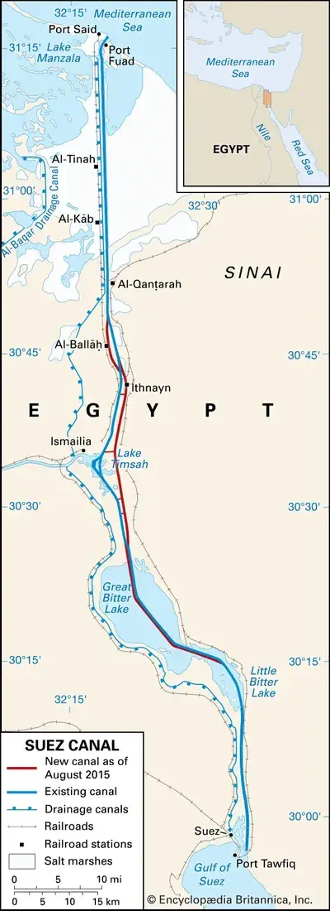
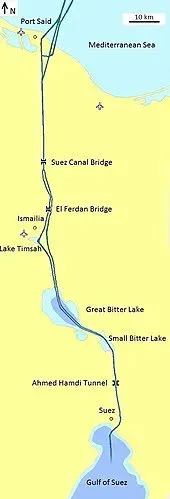
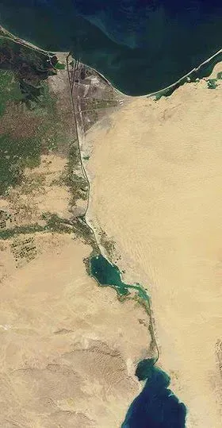

Suez Canal
Passage through the Suez Canal
About Suez Canal
One of the highlights of our years on H.M.S. Eagle was our passage through the Suez Canal. The Suez Canal is an artificial waterway in Egypt, connecting the Mediterranean Sea to the Red Sea. It is one of the most important maritime routes in the world, allowing ships to bypass the long and treacherous journey around the southern tip of Africa. The canal was completed in 1869 and has since been a vital artery for global trade and naval operations. Our passage through the Suez Canal was a memorable experience, as we navigated through its narrow channels and marveled at the engineering marvel that it represents. The highlight of our first passage through the canal in 1964 was the sight of a large signpost for fly BOAC. BOAC means British Overseas Airways Corporation, and it was quite a bizarre thing to see in the middle of the canal and surrounded by sand. We passed through the canal several times during our service on H.M.S. Eagle, and each time it was a reminder of the strategic importance of this waterway and the role it played in our naval operations. Though the canal is quite wide, it did look strange when in some places on the flight deck you were not able to see any water, so it looked as though we were sailing across the sands.


